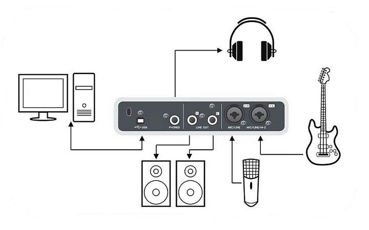

Tarjetas de sonido
¿Que es una tarjeta de sonido?
El sonido y la computadora son inseparables en la era digital. En pocas radios se trabaja ya con audio analógico y casi todas editan usando software y computadoras. Pero el sonido, en su origen, es analógico. La computadora, por lo tanto, tiene que contar con un dispositivo que transforme el audio analógico en digital. Se llama tarjeta de audio o de sonido.
Como funcionan las tarjetas de sonido
Las tarjetas de sonido tienen un componente llamado conversor, este es el encargado de digitalizar el sonido.
Al realizar grabaciones de audio en el ordenador a través de nuestra tarjeta utilizando la entrada, a esta llega audio analógico pasando por el conversor analógico/digital (A/D). Esta señal analógica es transformada en ceros y unos legibles por la computadora. El proceso será inverso a la hora de reproducir el audio almacenado en la computadora y que este suene por los altavoces. El audio digital pasa por el conversor digital/analógico (D/A) convirtiéndose en una onda analógica reproducible por los altavoces.
-DSP (Digital Signal Processor) es un microprocesador que trabaja el audio digital, básicamente se encarga de procesar los sonidos convertidos en ceros y unos. Este simplifica el trabajo de la CPU al realizar los cálculos para transformar las señales analógicas y digitales. Algunas tarjetas no disponen de un DSP generalmente las integradas y la carga es procesada por el CPU de nuestro ordenador.
Características
Calidad de los conversores
La calidad de respuesta de una tarjeta se mide en bits de resolución y la frecuencia de muestreo, dependiendo de la calidad de nuestra tarjeta estos valores pueden variar. El estándar suele ser 16 bits de resolución y 44.1 khz de frecuencia de muestreo, en el caso de las profesionales 24 bits 192 khz.
Latencia
La latencia en el sentido audio digital esta directamente relacionada con la tarjeta de audio. Para definirla sencillamente es el tiempo que tarda en procesar la entrada de audio (por ejemplo: tu voz a través del micrófono) y la salida por dicha tarjeta. Tu ordenador necesita tiempo para procesar la señal y esto causa un cierto retardo entre la entrada y la salida.
Full-Duplex
Es la posibilidad que tienen básicamente todas las tarjetas salvo las más baratas, nos permiten tener simultáneamente la entrada y salida del sonido. Podemos hacer una grabación mediante el micrófono y a la misma vez poder escuchar una canción, esto viene bien en temas de grabación musical.
Drivers
Los drivers o controladores de dispositivos no es más que un pequeño software que conecta el sistema operativo con los componentes (hardware) de la tarjeta. Cada tarjeta tiene sus propios drivers, aunque coinciden en su funcionamiento.
Tipos de tarjetas de sonido
Integradas en la placa base
Internas o PCI
Interfaz externo
Externas profesionales
Integradas
Las placas base traen integradas una tarjeta de sonido bastante sencilla para funciones básicas, pero este tipo de tarjetas están muy limitadas de cara a la grabación de audio, conexión de altavoces de mayor calidad… Por eso si lo que quieres es grabar audio con una mayor respuesta y calidad lo mejor es invertir en algo de más calidad adecuado al uso que se le vaya a dar.
Internas o PCI
Tarjetas con mejoras en las características respecto a las anteriores, siguen siendo algo básico de cara al tema musical, pero eficientes para grabaciones caseras con algo más de calidad. Estas se conectan mediante la inserción de la tarjeta en los slots de la placa base (PCI Peripherical Component Interconnect). Para la configuración de entrada y salida se hace con colores: Rosado: Entrada del micrófono. Azul: Entrada de línea. Verde: Salida de audio para los altavoces.
Externas
A diferencia de las anteriores estas no van dentro de la caja del PC, son módulos independientes que se conectan mediante USB o firewire y funcionan como consolas totalmente independientes al PC esta es una gran ventaja porque todos los procesos de audio los realiza nuestra tarjeta. Con este tipo de tarjetas ganamos en calidad, latencia, conexiones, canales… Podríamos montar un pequeño estudio de grabación con una tarjeta de este tipo, un micrófono y unos altavoces auto amplificados, teniendo así una altísima calidad de grabación. Esta sería la opción más recomendable para estudios de producción musical.
Externas profesionales
Aunque en las externas también encontramos profesionales y de muy buena calidad dependiendo del precio, solo quería recalcar estas como profesionales en el sentido de su formato (Rack), calidad de los conversores y cantidad de entradas de audio. Estas se sitúan en un rango de precios bastante elevados solo al alcance de estudios profesionales, emisoras...
Conexiones
En el caso de las integradas en la placa base no hay ningún tipo de conexión puesto que ya están integradas en la placa, en las internas la conexión se hace mediante la inserción de la tarjeta en los slots de la placa base (PCI Peripherical Component Interconnect) .
En el caso de las externas podemos encontrar conexiones digitales:
USB
Es el tipo de conector más usado por la mayoría de periféricos para ser conectados al PC, pues igual pasa con la mayoría de tarjetas externas.
Firewire
Desarrollado por Apple cada vez son más los periféricos que usan este tipo de puerto, su gran velocidad de transferencia lo hacen que sea cada vez más usado. Aunque se diseñó para imágenes y video hoy día muchas tarjetas externas también lo usan.Ejemplos de configuraciones
Ejemplo de configuración básica para una tarjeta integrada o tarjeta interna (PCI).
En este tipo de configuración podemos añadir unos altavoces o cascos y un micrófono, aunque es algo básico, podemos realizar alguna grabación, chatear, alguna videoconferencia, videojuegos…
Ejemplo de configuración básica para una tarjeta externa.
En este ejemplo podemos ver que podemos añadir unos cascos a la vez que los altavoces, grabar una guitarra y añadir un micro condensador, no son muchos los cambios respecto a la anterior, pero respecto a calidad estas pequeñas nos aportan mucha en diferencia a las integradas.
Ejemplo de configuración de tarjeta externa.
Este ejemplo de configuración más avanzada del nivel de un buen home estudio o estudio profesional, ya vemos más instrumentos conectados, aunque pasando por una mesa de mezclas de estudio. Este tipo de mesas nos ofrecen más prestaciones en cuanto a calidad de los previos, posibilidad de regular el volumen de salida y entrada, más canales para instrumentos… Aunque muchas mesas traen su propia interfaz para comunicarse con el ordenador sin la necesidad de usar una tarjeta.
Algunos tipos de conectores usados en audio
Marcas y precios
Internas o PCI
Asus Xonar DX
Creative Sound Blaster
Externas USB
Focusrite Scarlett 2i2
Roland Rubix 24
Profesionales
>RME Fireface UFX+
Antelope Orion 32+
Informacion tomada:
García Gago, Santiago (30 agosto 2014) 52 - ¿Cómo funcionan las tarjetas de audio?, Radios Libres
https://radioslibres.net/52-como-funcionan-las-tarjetas-de-audio/
M. Z. Javier (2019) ¿Que tarjeta de sonido comprar en 2019?, Tarjetas de Sonido,
https://tarjetasdesonido.net/para-que-sirve-la-tarjeta-de-sonido-cual-es-su-funcion/
EcuRed, Tarjetas de sonido,
https://www.ecured.cu/Tarjeta_de_sonido
Denoizer, ¿que es la latencia?,
Víctor Gallardo Luque
6 de Diciembre de 2019